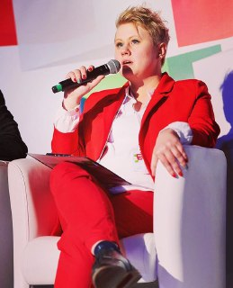

<div class="container-main">
    <div class="container">


        <div class="row justify-content-center " style="margin-top:75px;">

            <h2>Anna Timachova </h2>

        </div>
        <div class="row d-flex flex-column-reverse">
            <div class="col-md-12   text-box">
                <p class="">
                     Привіт мене звуть Анна і я вірю в потенціал кожної людини. Моє життєве кредо та улюблене татуювання «Non progredi est regredi», тобто
                    відсутність прогрессу – це регрес. Займаюсь розвитком особистостей понад 7 років – і люблю цю справу тому, що вважаю, що немає нічого більш надихаючого, ніж розвиток та успіх особистостей та команд. Чому наша зустріч (#коуч-сессія
                    або #консультація) може бути цікава та корисна для вас:  Я #сертифікований коуч та постійно навчаюсь, зокрема і роботі з it-фахівцями  Маю вищу освіту з управління підприємствами та продовжую отримувати знання в менеджмент-турах,
                    сертифікаціях та короткострокових курсах  Маю досвід роботи на керівних посадах з 20 років (13 років) в компаніях з іноземними та національними інвестиціями (найменша команда складала 3, а найбільша 6500 людей);  Діючий топ-менеджер
                    українського корпоративного сегменту – вважаю, що найкращі знання - перевірені на практиці і маю віру в те, що українці вміють створювати класний прогресивний бізнес;  Вмію очолювати зміни, виклики та розумію, які проблеми постають
                    перед сучасними управлінцями;  Люблю себе та людей та драйвую від того, коли супроводжую їх на шляху до мети  Все, що маю – надбала сама і знаю, як це робити  Несу відповідальність за свої дії, проводжу сесії згідно верифікованих
                    стандартів та гарантую порядність.  Співпрацюю партнерами-професіоналами у різних сферах бізнес експертизи  Багато подорожую, займаюсь творчістю, веду блог, маю широкий світогляд та високий енергетичний рівень Якщо ви готові до змін
                    і хочете знайти відповідь на питання – який УСПІХ на смак та як виглядає саме ВАША ГАРМОНІЯ, якщо хочете налагодити процеси та забезпечити РЕЗУЛЬТАТ – вітаю.</p>
            </div>


        </div>
    </div>

</div>